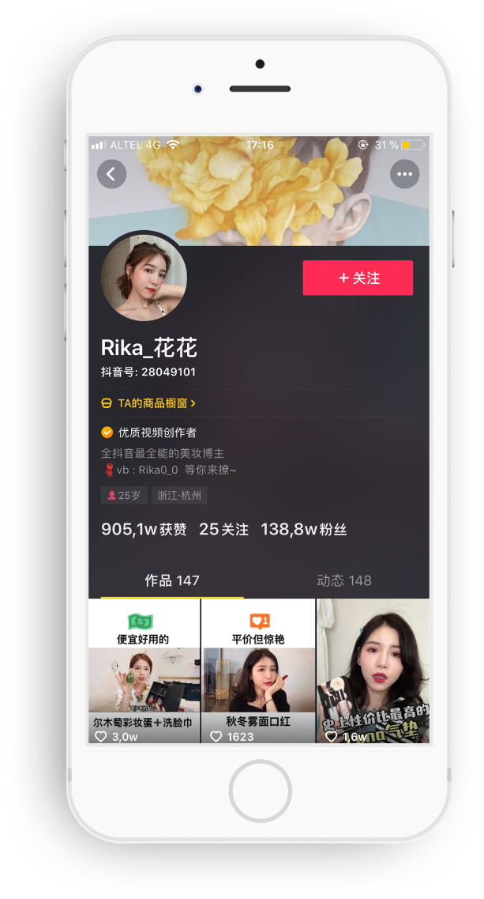
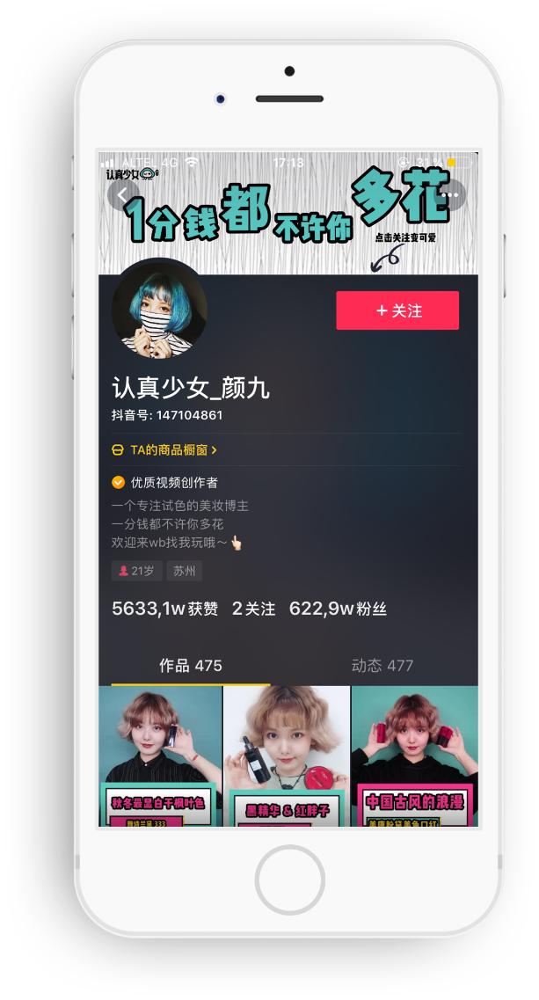
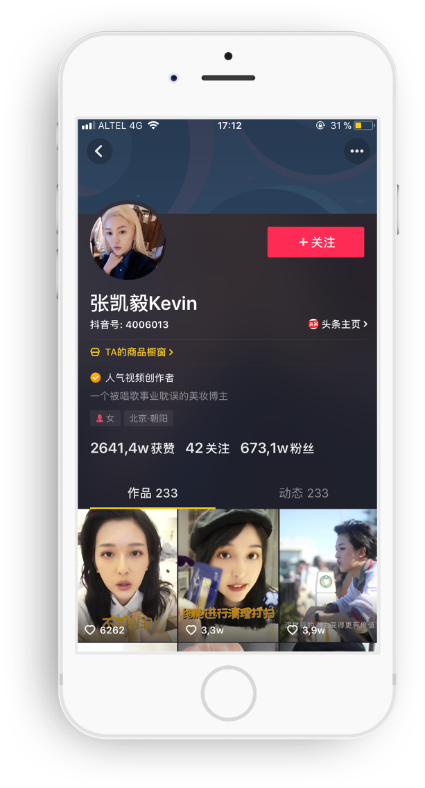
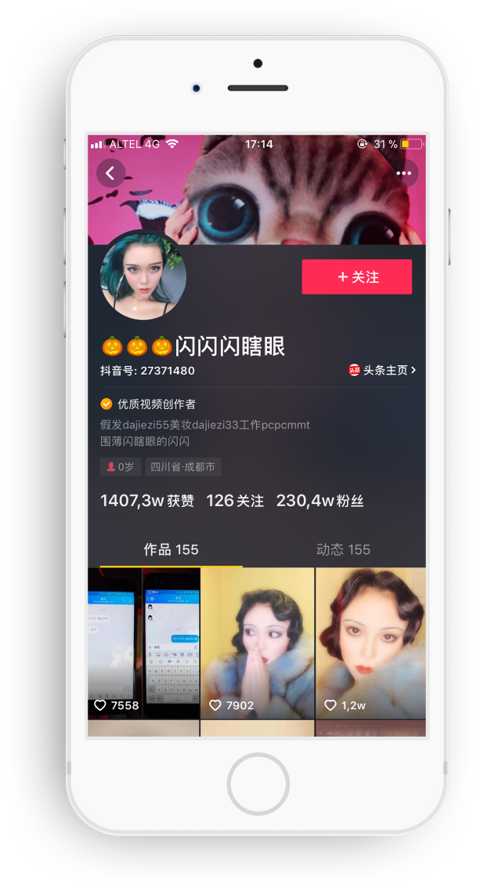
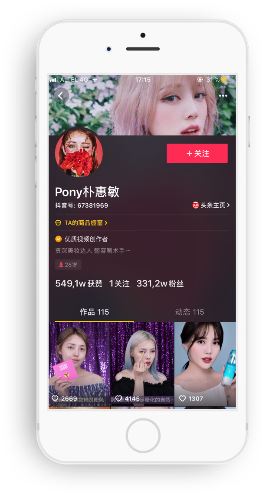

КИТАЙСКИЕ ИНТЕРНЕТ-СЕЛЕБРИТИ ИЛИ КТО ТАКИЕ ВАНХУНЫ?
Рынок интернет-селебрити в Китае переживает очередной бум. Digital-пространство сегодня стало одним из ключевых каналов заработка для рекламодателей и знаменитостей, которые используют социальные сети как механизм продвижения своего персонального бренда и популяризации своего творчества. Миллионы подписчиков и десятки миллионов просмотров публикуемого контента - основные показатели для рекламодателей, которые гонятся за инфлюенсерами и лидерами мнений с предложениями о сотрудничестве и продакт-плейсменте.
Общепринятое название в Китае для интернет-знаменитостей - ванхуны (网红, перевод. 网 - интернет, 红 - красный). К числу ванхунов можно отнести интернет-блогеров и медийных персон, которые имеют большую популярность в китайских социальных сетях. Индустрия растёт с каждым годом, и, если в 2016 году экономика ванхунов составляла около $8 млрд, то за 2017 год она достигла отметки в $15 млрд (данные CBNData), а доходы успешного ванхуна могут достигать 150 000 долларов в месяц.
Основной движущей силой такого стремительного роста стало появление новых интернет-сервисов, которые предлагают наибольший охват аудитории, а также общий рост китайских интернет-знаменитостей, привлекающих подписчиков уникальным и интересным контентом. Если раньше основным каналом коммуникации для блогеров были WeChat, WeiBo и Youku, то с появлением стриминговых сервисов активное распространение получил широко известный на Западе TikTok (кит. 抖音 Douyin) - потоковый сервис для короткометражных видео, помогающий зарабатывать своим интернет-селебрити на рекламе во время трансляций онлайн.

2.3М

3.3М

1.3М

6.2М

6.7М
Многогранность индустрии интернет-селебрити способствовала появлению сопутствующих услуг, таких как продюсерские центры и блогерские MCN-агентства (MCN - Multi-Channel Network), специализирующихся на продвижении своих клиентов в социальных сетях. Одни отвечают за цифровую дистрибуцию, другие - за креативность контента и подход к целевой аудитории. Около 90% блогеров с аудиторией подписчиков свыше 100 000 человек сотрудничают с локальными MCN-агентствами, которых сегодня насчитывается более 2000 по всему Китаю.
ЗАРУБЕЖНЫЕ ИНТЕРНЕТ-СЕЛЕБРИТИ В КИТАЕ
На самом деле, самые популярные зарубежные знаменитости в Китае не такие зарубежные. Как правило, это экспаты, много лет живущие в Китае и привлекающие к себе интерес засчёт совершенного знания китайского языка, умения петь на нём или танцевать. Они выступают на шоу талантов, приглашаются на телевизионные передачи и сотрудничают с китайскими интернет-блогерами. Количество подписчиков для зарубежного интернет-селебрити может достигать несколько миллионов человек.
Из-за появления цензуры в китайском интернет-пространстве, большая часть привычных нам интернет-сервисов заблокирована. Google, Facebook, Twitter, YouTube, Instagram и др. самые популярные интернет-площадки для зарубежных селебрити недоступны жителям материкового Китая. Чтобы популяризовать себя и своё творчество, зарубежным музыкальным исполнителям, артистам и блогерам необходимо как минимум научиться работать (и понимать механизмы продвижения) с крупнейшими локальными интернет-сервисами Китая, многие из которых доступны для регистрации только китайским пользователями. К таким сервисам относятся практически все социальные сети, включая WeChat, WeiBo, Douban и крупнейшие видеохостинги и стриминговые сервисы Youku, Tudou, Douyin, Bilibili, Miaopai и др. Помимо этого, любой публикуемый материал должен быть локализован на китайский язык и адаптирован к восприятию китайской аудиторией.
Единственные, кто может похвастаться своей популярностью в китайском интернете, это звёзды мирового масштаба, которых продюсируют крупнейшие музыкальные лейблы и организуют для них концертную деятельность в рамках азиатских турне, зарубежные актёры, снимающиеся в китайских фильмах и другие деятели культуры, успешно прошедшие путь от “офлайна к онлайну”. И даже в этом случае, большинство “официальных” профилей зарубежных селебрити в социальных сетях администрируются китайскими поклонниками, которые зарабатывают на своих любимых артистах без их ведома.
ЗАЧЕМ МЫ ОБ ЭТОМ ПИШЕМ? ВСЁ ОЧЕНЬ ПРОСТО
Если вы популярны и успешно продвигаетесь в социальных сетях, например, вы Instagram-селебрити и зарабатываете на своём уникальном и интересном контенте, то мы можем предложить вам многократное увеличение вашей аудитории и привлечение китайских рекламодателей с помощью популяризации вашего персонального бренда на всём интернет-пространстве Китая.
Сегодня, чтобы зарабатывать на своей популярности, вам достаточно “онлайн присутствия”. Качественный интерактивный контент, адаптированный к восприятию китайской аудиторией, позволит узнать о вас и привлечь к себе внимание. Мы придумываем уникальные и нестандартные решения, которые позволяют монетизировать ваше творчество через привлечение рекламодателей, спонсоров и партнёров, которые захотят узнать о вас больше и пригласить в Поднебесную.
ЧТО МЫ УМЕЕМ?
Мы разрабатываем индивидуальные стратегии и комплексные PR кампании, направленные на популяризацию и закрепление вашего бренда во всём онлайн-пространстве Китая. Следим за трендами и хайпами - мониторим социальные сети и медийные ресурсы, отслеживаем челленджы и флешмобы и используем в нашей кампании. Таким образом, мы увеличиваем медийные показатели и вашу узнаваемость, добиваясь поставленных целей.